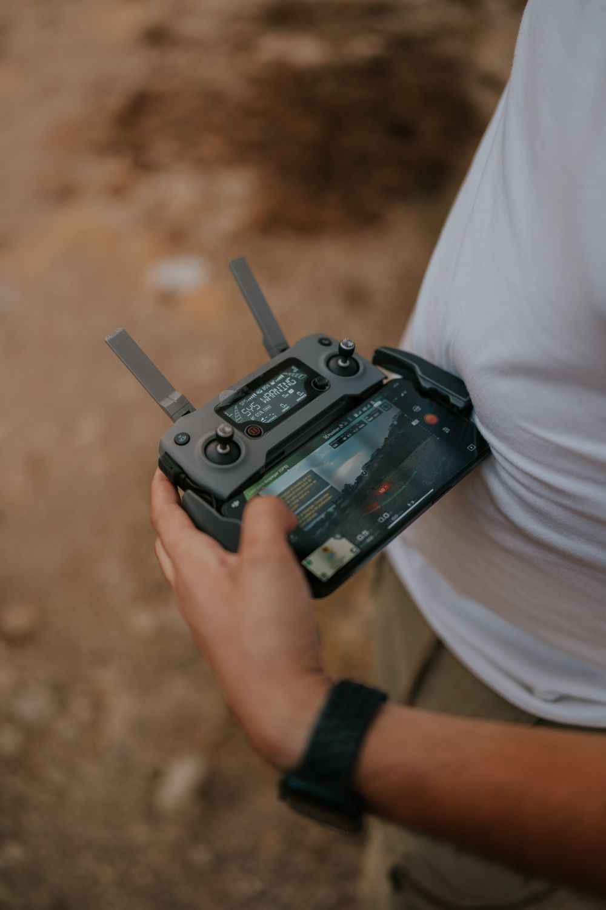

The paperwork came first. It still does.
Akash Rathore — wedding videographer by training, drone filmmaker by conviction, and the person who will ring you at breakfast if the wind says no.
FR.11 · Holi from above, Vrindavan — reference still, not an Akash Lens production frame. Photo: Sanat Anghan / Pexels

I spent six years filming weddings from the ground in Pune — close enough to smell the marigolds, too close to ever see the shape of the day. In 2017 I bought a drone to see the baraat’s route whole. The first festival that let me fly, a year later, taught me what the job actually is: the flying is the short part.
The long part is permission. My first big refusal came in 2019 — a procession film, refused in writing, correctly, because I had asked the wrong office with the wrong papers two weeks too late. I keep that letter in the log book. Everything this practice does since — the six-week lead times, the survey walks, the flight plans sent to clients before any showreel — was built out of that refusal.
Since then: 47 festivals and events, 612 sorties, two aircraft, one rule that has never been traded away for a shot — nobody flies over a dense crowd. The camera works from the edges, above the roofs and the water, and with a telephoto from standoff. The crowd is the pattern. The paperwork is why we’re allowed to see it. Both halves of that sentence are the job.
The aircraft are registered, I hold a remote pilot licence, and every flight is logged — including the nine days the weather grounded us and the three permissions that never came. A log that only records successes is not a log; it is an advertisement.
The Working Page
How a booking runs
Permission first
Before dates are promised: the organiser’s written consent, the venue’s, and the local administration’s intimation where the site needs it. If permission is refused, the booking ends there — and you are told why, with the letter shared.
Site survey
The site is walked, then flown once, empty. Launch points, standoff lines, the crowd’s edges and the wind’s habits are marked on a plan you approve before the event.
The flight plan
Sorties counted from the same tables the planner on this site uses — coverage, batteries, turnaround, the duty limit. The plan is a document, signed by both of us, not a conversation.
Fly it — or ground it
On the day, the plan is flown as written. If the wind crosses the printed limit, the grounded-day clause applies: ground cameras keep working, the aerial window moves, and the invoice shows both days honestly.
The Honesty Page
What a drone film is, and is not
The drone shot is about four percent of a finished festival film. The rest is ground cameras, the festival’s own sound, and weeks of editing. Anyone who sells you a festival film that is all drone is selling you the punctuation and calling it the sentence.
Identifiable celebrations raise a fair question, so here is the practice’s answer at the level it can be promised: the footage of your event belongs to you. Faces in a crowd are filmed from distances and heights where people read as a pattern, not as portraits; close, identifiable aerial portraits of guests are not a product this practice sells. What the client does with their own footage afterwards is the client’s — the terms say what we keep (the log, and the right to show the work in this log) and what we never keep (your guests’ faces, for anyone else’s use).
Engagement Terms
The small print, printed large
- Booking: 40% on the signed flight plan, the balance on delivery of the finished film.
- Grounded-day clause: weather over the printed limit converts the day to ground coverage at the half-day rate; the aerial window is re-flown once, at the half-day rate, within the same event or the next calm slot.
- Permission: administration is charged once per event, never twice for a re-flown day — and if permission is refused outright, only the administration and survey fees stand.
- Footage: the finished film and the raw aerial footage of your event are yours; the practice keeps the flight log and portfolio use of the finished film.
- Delivery: festival films in 3–4 weeks; venue films in 2; a same-week 90-second cut is available on festival bookings, priced in the estimate conversation.
- The line that does not move: no flight over a dense crowd, no flight without written permission, no flight over the wind limit — not for a fee, not for a deadline, not for a once-a-year shot.